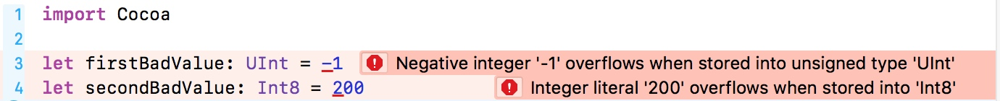

数是计算机语言的基础，也是软件开发的重要组成部分。
数用来记录温度的高低，判断一个句子用有多少个汉字。
数分两个基本类型：整数 和 浮点数
整数
有符号
整数是没有小数点和小数部分的数，也就是整个数。整数常常用来表示事物的数量。计算机所用的整数和你在别处用的整数有一个区别，那就是计算机的整数类型占据固定大小的内存，所以无法表示所有的整数——它们有最小值和最大值。
import Cocoa
print("The maximum Int value is \(Int.max).")
print("The minimum Int value is \(Int.min).")
结果是
The maximum Int value is 9223372036854775807
The minimum Int value is -9223372036854775808
为什么会有最大值最小值？
首先，计算机中以二进制来保存整数（也就是0和1），因为macOS系统中Int是64位整数，所以它可以表示\({2}^{64}\)种可能的值。默认的Int类型是有符号的整数所以Int的最高位为符号位，
最大值为\({2}^{0}\) + \({2}^{1}\) + ... + \({2}^{63}\)
最小值为
在iOS中，Int更复杂一些。苹果从iPhone 5S、iPad Air和带Retina屏的iPad mini开始引入64位设备，而更早的设备还是32位架构。32位架构中Int是32位整数，编译器会在构建程序时选择合适的Int长度。
如果需要知道整数的精确长度，可以使用Swift的显式长度整数类型，比如Int32是Swift的32位有符号整型。用Int32来看看32位整数的最小和最大值，
import Cocoa
print("The maximum 32-bit Int value is \(Int32.max)")
print("The minimum 32-bit Int value is \(Int32.min)")
结果
The maximum 32-bit Int value is 2147483647
The minimum 32-bit Int value is -2147483648
对于8位、16位和64位有符号整型，相应的还有Int8、Int16、Int64。需要知道整数长度时就用这些带长度的整型，比如使用某些算法（加密算法中比较常见）或者需要和其他计算机交换整数时（比如通过互联网发送数据）。这些类型不太常用，良好的Swift编程风格是在大部分情况下用Int
无符号
既然有有符号整数那么就也有无符号整数
有符号整数和无符号整数的区别在于二进制层面最高位（对于8位整数来说是27）表示的2的次幂是正数还是负数。
import Cocoa
print("The maximum 32-bit Int value is \(UInt32.max)")
print("The minimum 32-bit Int value is \(UInt32.min)")
结果
The maximum 32-bit Int value is 4294967295
The minimum 32-bit Int value is 0
所有无符号整型的最小值都是0，而N位的无符号整型最大值是\({2^N}\) N位无符号整型的最大值是\({2}^{64}\)-1，等于18 446 744 073 709 551 615。
有符号整型和无符号整型的最大值和最小值之间有对应关系，UInt64的最大值是Int64的最大值和最小值绝对值之和。无论是有符号整型还是无符号整型，都有264种可能的值，但是有符号整型需要把一半可能的值留给负数用。
创建整数实例
显示和隐式的声明类型
let numberOfPage: Int = 10
let numberOfChapters = 3
显式声明其他整数类型
let numberOfPeople: UInt = 40
let volumeAdjustment: Int32 = -1000
用非法的值创建整数类型
let firstBadValue: UInt = -1
let secondBadValue: Int8 = 200

编译器报告，你输入的两个值在保存到Uint和Int8类型的常量中时溢出了。“在保存到……中时溢出了”的意思是，当编译器尝试把数存入你指定的类型时，超出了该类型所允许的值的范围。Int8可以保存从-128到127的值，而200超出了这个范围，所以试图把200存入Int8导致溢出。
整数操作符
Swift允许利用人们熟悉的加（+）、减（-）、乘（*）、除（/）操作符对整数做基本算数算。
print(10 + 20)
print(30 - 5)
print(5 * 6)
编译器遵从数学运算的优先级（precedence）和结合性（associativity）法则，二者定了单个表达式中多个操作符的运算顺序。
print(10 + 2 * 5) // 20，因为 2 * 5先计算
print(30 - 5 - 5) // 20，因为30 - 5先计算
整数除法
整数除法中，整数除以整数的结果还是整数，小数部分会被截断。
print(10/3) // 3
获取余数的话可以使用取余符号%
print(11 % 3) // 打印2
print(-11 % 3) // 打印-2
快捷操作符
var x = 10
x += 10 // 等同于: x = x + 10
print("x has had 10 added to it and is now \(x)")
x -= 5 // 等同于: x = x - 5
print("x has had 5 subtracted from it and is now \(x)")
x /= 5 // 等同于： x = x / 5
print("\(x)")
x *= 5 // 等同于： x = x * 5
print("\(x)")
x %= 5 // 等同于： x = x % 5
print("\(x)")
转换整数类型
在Swift中类型不一样的时候不能做运算
import Cocoa
let a: Int16 = 200
let b: Int8 = 50
let c = a + b //类型不一样,运算会出现编译错误
在其他的语言中可能语言会自己做隐式转换，但是在Swift需要手动的转换。
import Cocoa
let a: Int16 = 200
let b: Int8 = 50
let c = a + Int16(b) //结果 250
浮点数
为了表示有小数点的树，需要用到浮点数（floating-point number）。
首先，浮点数在计算机是以尾数（mantissa）和指数（exponent）的形式存储的，类似于科学技术法。其次，浮点数通常不精确：有很多数无法以浮点数的形式精确存储。计算机会存储一个近似值，非常接近你要的数。
在Swift中浮点数有两个基本类型：32位浮点数Float和64位浮点数Double。Float和Double的长度差异并不像整数那样影响其最小值和最大值，而是影响其精度。Double的精度比Float高，这意味着它能存储更精确的近似值。
在Swift中，浮点数的默认推断类型是Double，就像整数的不同类型一样，你也可以显式地
声明Float和Double。
import Cocoa
let d1 = 1.1 // 隐式Double声明
let d2: Double = 1.1
let f1: Float = 100.3
所有数字操作符对浮点数都适用（除了取余操作符只能用于整数）
print(10.0 + 11.4)
print(11.0 / 3.0)
print(11.0 * 2.0)
print(13.0 - 2.2)
上面我们说浮点数的精确度问题，看下面的代码
import Cocoa
let d1 = 1.1 // 隐式Double声明
let d2: Double = 1.1
if d1 == d2 {
print("d1 and d2 are the same!")
}
print("d1 + 0.1 is \(d1 + 0.1)")
if d1 + 0.1 == 1.2 {
print("d1 + 0.1 is equal to 1.2")
}
我们初始化了两个double类型。d1 和 d2 都等于1.1，从计算上看d1+0.1应该是要等于1.2的，那么实际情况是什么呢？？
d1 and d2 are the same!
d1 + 0.1 is 1.2000000000000002
实际d1 + 0.1 is equal to 1.2没有被执行，从打印的结果看d1 + 0.1并不等于1.2而是一个近似值1.2000000000000002
具体的细节后面再来看看补一下，
所以这里需要注意不要用浮点数来表示必须精确的值。